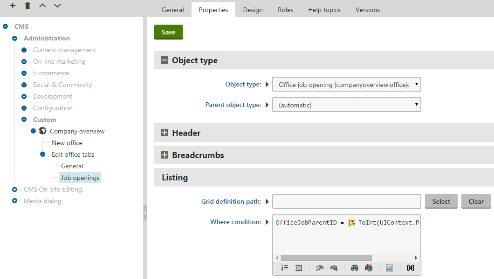
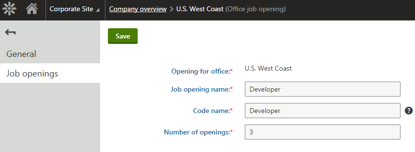

Setting parent-child relationships for classes
When developing custom modules, you can use the type information to define a hierarchy for the classes representing your data model. Child classes have a specified parent class, which can be either a standalone class or another child class. Every object (data record) of a child class contains a reference to a parent object.
Setting parent-child relationships for classes ensures that the system can provide many types of automatic behavior, such as:
Deleting of child objects when the parent is deleted
Including of child objects into the data of parent objects when using the export/import and staging features (see Enabling export and staging for the data of classes)
Simplified creation and displaying of child objects when building a custom administration interface
When planning the structure of your module's data, consider carefully whether to use parent-child relationships, standard references between classes (foreign keys) or separate binding classes.
Use child classes if you require objects with the automatic parent-child behavior described above. Keep in mind that objects of a child class cannot exist without a parent object.
To add a new class as a child of another class:
Open the Modules application and create the class in your custom module.
Define an integer type field in the class for storing the ID of the parent object. The best practice is to end the field name with the ID suffix.
Generate and save the Info code on the class's Code tab.
Edit the code of the new Info class.
Set the parentIDColumn and parentObjectType parameters in the constructor of the TYPEINFO object:
parentIDColumn - the name of the class field that stores the IDs of parent objects.
parentObjectType - the object type name of the class's parent (as defined in the type information of the parent class).
Save the changes (build the project on web application installations).
Note: Do NOT define a standard class reference (ObjectDependency instance) for the parent ID field in the type information code. The system automatically handles the required object dependencies based on the parent properties set in the TYPEINFO constructor.
You can then build an interface for managing the data of the child class. Use the following general approach:
Open the User interface tab of your custom module.
Create a listing element for the child class under an element whose Object type property is set to the parent class (typically an editing element).
Set the Object type property of the listing element to the child class.
Leave the Parent object type as (automatic). The system uses the parent defined in the type information metadata of the child class.
Set the Where condition property of the listing element to ensure that the list only includes the child objects of the current parent object.
Compare the value of the class's parent ID field with the result of the UIContext.ParentObjectID macro. For example: ParentID = {% ToInt(UIContext.ParentObjectID) %}
Create new and editing elements for the child class under the listing element (inherit the object type settings of the listing element).
Based on the type information metadata and the UI element properties described above, the system automatically sets the parent ID value for new child objects.
Parent-child limitations
Using pages as the parent class
Custom child classes with the page class as a parent (i.e. the cms.document object type) are NOT supported. Pages in Kentico are complex data structures that consist of multiple classes and have special logic for handling other factors, such as workflow.
Parent-child relationships that include pages do not provide the automatic functionality that works for other classes, such as deleting of child objects along with the parent page.
Self-referencing parent-child relationships
Currently, the system does NOT support classes that serve as their own parent class. Such classes would lead to various problems, for example when creating the first object of the given class (an existing parent must be assigned to each object).
The recommended approach is to create a separate class for each level of the hierarchy, with a root class that does not have a parent at the top. If you need to model a tree hierarchy with variable depth, you can create a class field that stores references to the same class, and then handle the parent-child functionality manually.
Example - Creating a custom child class
The following example demonstrates how to create a custom class as a child of another class. The sample child class represents job openings that are available for specific offices.
To follow the example, you first need to create the Company overview custom module and the Office class according to the instructions in Creating custom modules.
Creating the child class
Edit the Company overview module in the Modules application.
Select the Classes tab and click New class.
Fill in the class names:
Class display name: Office job opening
Class: OfficeJob
Click Next.
In step 2, leave the default values and click Next.
The system automatically creates the OfficeJobGuid and OfficeJobLastModified fields.
Create the following fields for the child class. Click New field, set the properties, and click Save for each field:
Field name: OfficeJobParentID
Data type: Integer number
Required: Yes (checked)
Display field in the editing form: No (clear the checkbox)
Field name: OfficeJobDisplayName
Data type: Text
Required: Yes (checked)
Field caption: Job opening name
Form control: Text box
Field name: OfficeJobName
Data type: Text
Required: Yes (checked)
Unique: Yes (checked)
Field caption: Code name
Form control: Code name (select via the (more items...) option)
Field name: OfficeJobOpeningCount
Data type: Integer number
Required: Yes (checked)
Field caption: Number of openings
Form control: Text box
Editing control settings -> Advanced -> Filter -> Type: Select the Numbers checkbox
Click Next once the required fields are defined.
Click Finish to complete the creation of the class.
The system automatically creates a database table for storing the class's data.
Setting the type information for the child class
Prepare the code required for the class's API, including the type information:
Select the Code tab in the editing interface of the Office job opening class.
Click Save code. The system generates an Info and InfoProvider class in the ~/App_Code/CMSModules/CompanyOverview folder.
Open your web project in Visual Studio and edit OfficeJobInfo.cs .
Note: On web application installations, the system generates the files in the Old_App_Code folder. You need to manually include the files into the CMSApp project (or move the files into your own custom module project).
Navigate to the TYPEINFO field in the class's code.
Set the parent-related parameters of the ObjectTypeInfo constructor (the last two parameters):
parentIDColumn: "OfficeJobParentID"
parentObjectType: OfficeInfo.OBJECT_TYPE
publicstaticObjectTypeInfo TYPEINFO =newObjectTypeInfo(typeof(OfficeJobInfoProvider), OBJECT_TYPE,"CompanyOverview.OfficeJob","OfficeJobID","OfficeJobLastModified","OfficeJobGuid","OfficeJobName","OfficeJobDisplayName",null,null,"OfficeJobParentID", OfficeInfo.OBJECT_TYPE){ModuleName ="CompanyOverview",TouchCacheDependencies =true,};
Save the change (build the project on web application installations).
The companyoverview.officejob object type is now properly registered as a child of the companyoverview.office type.
Adding the class name resource string
Create a resource string for displaying the job opening object type name:
In the Kentico administration interface, open the Localization application.
On the Resource strings tab, click New string.
Enter the following Key: ObjectType.CompanyOverview_OfficeJob
Type the following text for the English version of the key: Office job opening
Click Save.
The system uses the resource string in the administration interface, for example when selecting object types.
Building an interface for the child class
The following steps show how to extend the custom Company overview administration interface to allow management of job openings under specific offices:
In the Modules application, edit the Company overview module.
Select the User interface tab.
Expand the CMS -> Administration -> Custom element in the UI element tree.
Adding tabs to the office editing interface:
Select Company overview in the UI element tree.
Click New element (
 ).
).Set the following properties for the element:
Display name: Edit office tabs
Code name: EditOfficeTabs (Important: The code name of elements for editing objects under listings must always start with the Edit keyword)
Module: Company overview
Display breadcrumbs: yes
Page template: Vertical tabs
Click Save.
Moving the original office editing element under the tabs:
Select the Edit office element (from the example in Creating custom modules).
Change the element's names and move it under the new tabs element:
Display name: General
Code name: GeneralEditOffice
Parent element: Edit office tabs
Click Save.
Open the Properties tab and disable the Display breadcrumbs property.
Click Save.
Adding the listing element for the job opening child class:
Select the Edit office tabs element in the tree.
Click New element (
).Set the following properties for the element:
Display name: Job openings
Code name: JobsEditOffice
Module: Company overview
Page template: Object listing
Click Save.
Switch to the element's Properties tab.
Select Office job opening (companyoverview.officejob) as the Object type.
Leave the Parent object type set to (automatic). The system automatically identifies the parent object type based on the type information metadata of the child class.
Set the listing Where condition: OfficeJobParentID = {% ToInt(UIContext.ParentObjectID) %}
This condition ensures that the listing only displays job openings whose parent ID matches the ID of the currently edited office.
Click Save.

Properties of the listing element for the Job opening child classCreate the XML grid definition for the listing page in the default location: ~/App_Data/CMSModules/CompanyOverview/UI/Grids/CompanyOverview_OfficeJob\default.xml
<?xmlversion="1.0"encoding="utf-8"?><grid><actions><actionname="edit"caption="$General.Edit$"fonticonclass="icon-edit"fonticonstyle="allow"/><actionname="#delete"caption="$General.Delete$"fonticonclass="icon-bin"fonticonstyle="critical"confirmation="$General.ConfirmDelete$"/></actions><columns><columnsource="OfficeJobDisplayName"caption="Job opening name"wrap="false"localize="true"><filtertype="text"size="200"/></column><columnsource="OfficeJobOpeningCount"caption="Number of openings"width="100%"/></columns><options><keyname="DisplayFilter"value="true"/></options></grid>
When editing an office, the Job openings tab now displays a list of all job openings created for that specific office.
Adding the new job opening element:
Select the Job openings element in the tree.
Click New element (
).Set the following properties for the element:
Display name: New job opening
Code name: NewOfficeJob (Important: The code name of elements for creating new objects under listings must always start with the New keyword)
Module: Company overview
Page template: New / Edit object
Click Save.
The New element allows users to create new job openings from the listing page. When creating new job opening objects, the system automatically sets the OfficeJobParentID to the ID of the currently edited office (based on the type information settings of the child class).
Adding the job opening editing element:
Select the Job openings element in the tree.
Click New element (
).Set the following properties for the element:
Display name: Edit job opening
Code name: EditOfficeJob (Important: The code name of elements for editing objects under listings must always start with the Edit keyword)
Module: Company overview
Page template: New / Edit object
Click Save.
Switch to the element's Properties tab.
Set the Alternative form name property to UpdateOfficeJob.
Click Save.
Now create the UpdateOfficeJob alternative form for the editing page:
Switch to the Classes tab of the module editing interface (for the Company overview module).
Edit the Office job opening class.
Select the Alternative forms tab and click Create new form.
Enter the following names for the form:
Display name: Job opening editing
Code name: UpdateOfficeJob (must match the value set for the editing element's Alternative form name)
Switch to the Fields tab of the new alternative form.
Select and configure the OfficeJobParentID field:
Display field in the editing form : yes (select the checkbox)
Field caption: Opening for office
Form control: Object transformation (select via the (more items...) option)
Editing control settings -> Object type: companyoverview.office (the object type name of the parent)
Editing control settings -> Output format: OfficeDisplayName
Click Save.
The alternative form ensures that the parent ID field is visible when editing existing job openings, but not when creating new ones. The Object transformation form control converts the ID of the parent office into the display name.
The custom module now has two classes in a parent-child hierarchy, and an editing interface that automatically handles the setting of parent IDs and displaying of the correct child objects. You can try out the functionality in the Company overview application under the Custom category.

Editing a job opening object under a parent office in the custom module's interface